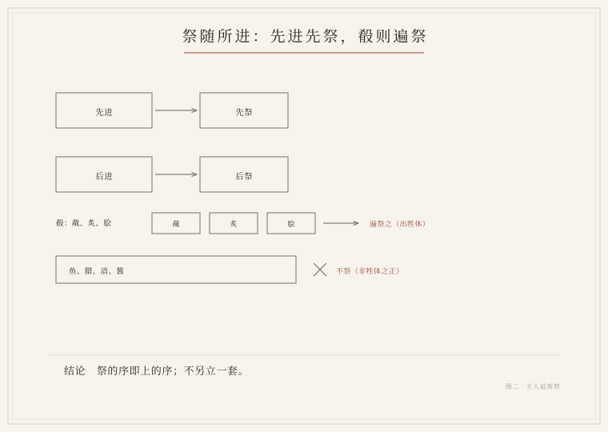

曲礼上 · 一·六十三 · 第 61 课
主人导客行祭：每样先上的先祭，殽按次序遍祭——因为祭的是「先代造食之人」，不敢忘本。
说什么事：主人延客祭。祭食，祭所先进。殽之序，徧祭之。
落在哪一层：仪。上节讲辞让，此节讲祭。
为何编在此位：一·六十讲「让」，此节讲「报」；让是对人的，报是对先的。
【经】主人延客祭。祭食，祭所先進。殽之序，徧祭之。
【注】延，道也。祭，祭先也，君子有事，不忘本也。客不降等則先祭。主人所先進先祭之，所後進後祭之，如其次。謂胾、炙、膾也，以其本出於牲體也。《公食大夫禮》：「魚、臘、湆、醬不祭也。」
延 注「延，道也」。道，导也。主人先动，客从之，故曰延。
祭 注「祭先也，君子有事，不忘本也」。疏：「祭者，君子不忘本，有德必酬之，故得食而种种出少许，置在豆间之地，以报先代造食之人也。」
客不降等则先祭 注。敌客以上，客自祭，不待主人导。
祭所先进 注「主人所先进先祭之，所后进后祭之，如其次」。
殽之序，徧祭之 注「谓胾、炙、脍也，以其本出于牲体也」。疏：「徧，匝也。炙胾之属，虽同出于牲，今祭之，故种种次序，徧匝祭之。」
鱼腊湆酱不祭 注引《公食大夫礼》。疏引「三牲之肺不离……鱼、腊、酱、湆不祭也」。
主人导客人行祭。祭食时，先上的先祭。殽按次序，遍祭一遍。
一节三句，讲的是一件事的两面：祭的动由主人导，祭的序随所进之序。所祭者不是鬼神，是「先代造食之人」——一饭之来有其所自，故食前先出少许以报。
第一层 延是导不是请 注用「道」字，不用「请」字。请是求，导是先。主人先行一步，客随之，礼才成。若主人不先，客亦不敢先。
第二层 祭所先进 祭的次序即是上的次序，礼不另立一套。这一条最见礼的整齐：不另起炉灶，随事成序。
第三层 徧祭殽 胾、炙、脍皆出牲体，故遍祭。鱼、腊、湆、酱不祭，以其非牲体之正。祭有取有舍，取舍皆有其故。
第四层 不忘本 注「君子有事，不忘本也」六字，是全节的根。一饭、一肉，都不是自己造的；食而知其所自，故祭。
与今日何干 今人饭前多不祭，然「不忘本」之意仍在：谢农人、谢厨者、谢请客的人。此节所立的是一个态度，不必复其仪。
| 左 | 右 |
|---|---|
| 主人延客祭 | 延，导也；主人先，客从 |
| 祭先 | 不忘本，报先代造食之人 |
| 祭所先进 | 序随所进，先进先祭 |
| 殽之序，徧祭之 | 胾、炙、脍，出牲体故遍 |
| 鱼腊湆酱不祭 | 非牲体之正，故舍 |
| 客不降等则先祭 | 敌客自祭，不待延 |
画案上两只豆并置，豆间空地上有一小撮饭粒与一点肉末，已被拨出、尚未收起；豆旁另有一小盂，盂中一点酱未被拨动。案面其余处干净。不画手、不画人、不写文字。赭色只在那小撮上的一线。
